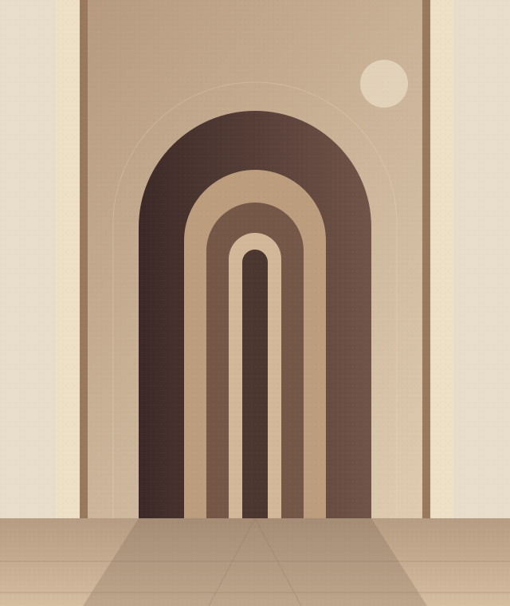

Pessoas, famílias e negócios
Clareza para decidir.Cuidado para seguir.
Uma visão de advocacia que começa pela escuta, organiza as possibilidades e aproxima o Direito das decisões da vida.
Uma identidade imaginada. Uma experiência feita para demonstrar.

Nossa perspectiva
O primeiro passo é
entender o contexto.
Cada decisão tem uma história. Antes de apontar caminhos, é preciso compreender o que está em jogo.
A LM é um conceito de escritório dedicado a relações pessoais e empresariais. A proposta reúne comunicação compreensível, análise cuidadosa e atenção às particularidades de cada situação.
Conhecer os princípiosÁreas de atuação
Presença nas decisões
que importam.
Direito Civil e Contratos
Relações do cotidiano, patrimônio e acordos.
Família e Sucessões
Cuidado com vínculos, transições e continuidade.
Direito Empresarial
Organização das relações comerciais e da vida de pequenos negócios.
Relações de Consumo
Compreensão de direitos e responsabilidades nas relações de consumo.
Forma de trabalhar · conceito
Atenção em cada etapa.
Uma jornada pensada para tornar
o processo mais compreensível.
-
01 / ESCUTAR
Compreender a situação
Contexto, prioridades e dúvidas orientam a primeira conversa.
-
02 / ORGANIZAR
Apresentar possibilidades
Caminhos e limites são apresentados em linguagem direta.
-
03 / ACOMPANHAR
Manter a comunicação
Próximos passos e responsabilidades permanecem claros.
O próximo passo
Uma conversa começa
com escuta.
Explore a experiência de primeiro contato
nesta demonstração de portfólio.